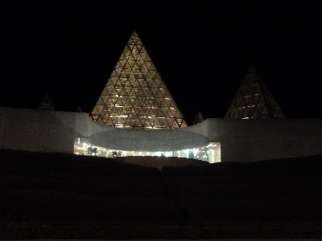
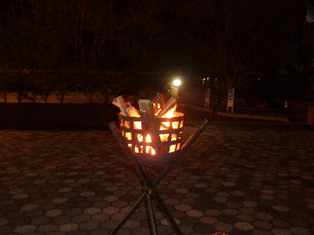
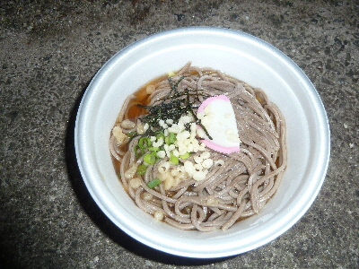
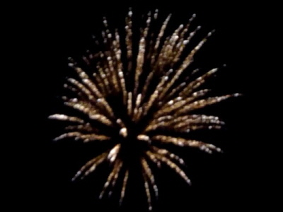
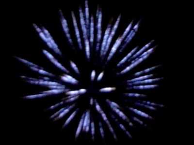
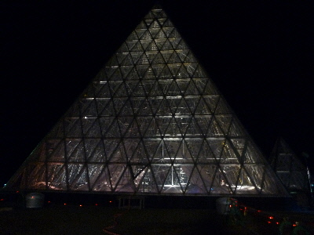
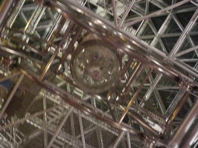

今年の時の祭典は行けるかな？
2018/12/19
イベントのチラシを見ました。
お蕎麦と豚汁が200円になったんですね。ぜんざいは相変わらずふるまいのようです。
200円なら安いのでいいかな。
天気がいいといいですね。大晦日には他にもイベントがあるので、どこに行こうか考え中です。
島根県大田市仁摩町天河内975
2018/12/19
イベントのチラシを見ました。
お蕎麦と豚汁が200円になったんですね。ぜんざいは相変わらずふるまいのようです。
200円なら安いのでいいかな。
天気がいいといいですね。大晦日には他にもイベントがあるので、どこに行こうか考え中です。
2016/12/31
大晦日に花火を見に仁摩サンドミュージアムに行きました。 21:30イベントスタートで、21:00くらいに着いたら近くの駐車場に車が止めれました。

かがり火がいい雰囲気を出してました。

でも火の粉が飛んで少し怖かったです。

豚汁、ぜんざい、そばの振る舞いがありました。
お蕎麦一杯は、普通に1人前の量がありました。豚汁もいただいたので、お腹いっぱいになりました。うれしいサービスでした。
夜のイベントで寒かったので、カミソリクローバーZのステージまでは見たんですが、その後駐車場の車に帰りました。 ビンゴカードは行列が長かったので参加しませんでした。
花火が始まるまで、車で紅白歌合戦見たり行く年来る年を見て、年末気分を満喫しました。


花火は駐車場で見ました。花火が風に流されていましたが、綺麗でした。


花火が終わってから、サンドミュージアムに無料で入れました。
写真がブレてます。ミュージアムの天上にある大きな砂時計は、ひっくり返したばかりなので砂がほとんど下に貯まっていません。
来年は砂時計がひっくり返る瞬間がみたいかな。